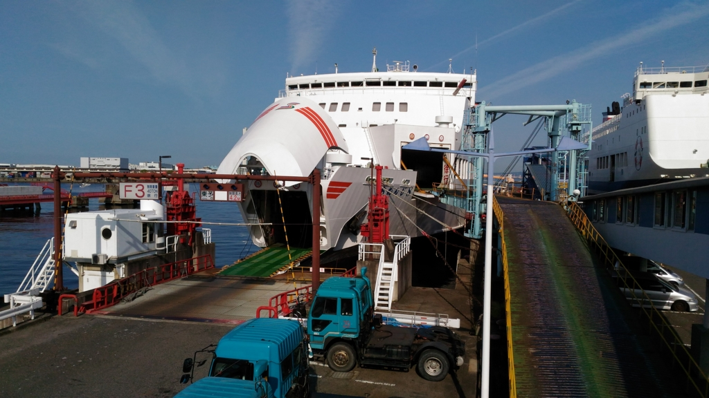
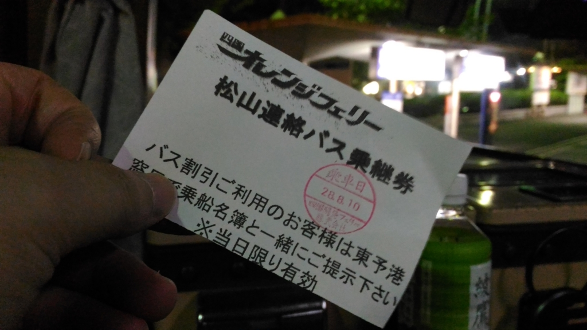

オレンジフェリーで松山～東予港 → 大阪・南港
公開日：

お盆休みはフェリーで関西へ。墓参りとばあちゃんのお見舞いをしてきた。
前回は壬生川から東予港まで歩いてえらい目に遭ったので、その経験を活かして JR 松山駅から連絡バスを使った。
連絡バスには
- 松山方面直通連絡バス（伊予鉄バス、有料）：出港ギリギリにつく
- 早乗り用連絡バス：9時前に到着。せとうちバスの路線バス（有料）で小松総合支所前へ向かい、今治方面の連絡バス（無料）で東予港まで
の2種類がある（[乗り場案内／アクセス | 連絡バス（関空⇔大阪南港・松山⇔東予港） | オレンジフェリー｜四国開発フェリー株式会社](http://www.orange-ferry.co.jp/access/renraku.html)）。
どっちも予約制なのかな。Web フォームから予約する場合は、備考欄だか連絡欄だかに「（好みのバス停）から連絡バス希望」とでも書いておけばいいらしい。とはいえ乗車の際に名前の申告などは不要のようで、割と適当。事前に乗車人数を把握したいだけみたいだ。

料金を前払いして乗車すると、白い「乗り継ぎ券」がもらえる。これを乗船手続きの際に提示すると、船賃が少し割引きになる。なくさないようにしましょう。
それにしても、東予港で乗船手続きに時間がかかるのは面倒くさいなー。バスできた人がいっぺんに窓口に殺到するので、のんびりしてると手続きが終わるまでだいぶ待たされる。オレンジフェリーはクレジットカードも使えないし、ここら辺は改善してほしいな。Web で先に情報を入力しておけばサクッと乗船できるとか。なんか手続き的に難しいところでもあるんだろうか。
あ、でもよくなってたところも。船内レストランにビールサーバーが追加されてて、注文で並ばずともそっちでビールを注いで飲めるようになったっぽい。これでガビガビ、思う存分ビールが飲めるね！